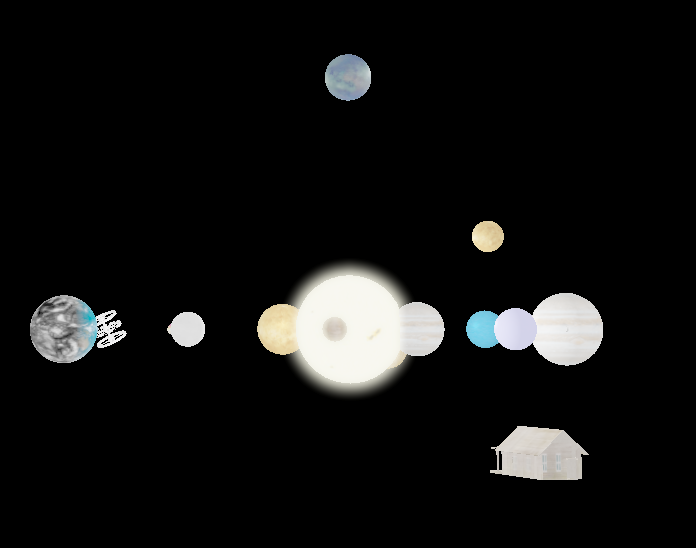

For our project, we set out to create a solar system that contained multiple planets all with accurate gravity simulated. We used the actual actual formula for gravitional pull and orbit velocity to create this. This means that if a planet and star are a certain mass with a certain distance apart in space it would follow this the path shown in our project.
We allowed the player multiple ways to move around. The first was a free look camera, similar to the camera that was used in Assignment 4. This way makes it easy to navigate and move around the world. The second way was the space shuttle. The way this movement worked was the player would have to use the WASD keys in order to orient their spaceship to fly a certain direction. By pressing the spacebar, the player could accelerate in the direction they are facing. The ship would continue moving in this direction until acted on by another force which could be gravity from another planet or the player accelerating in a different direction.
Bloom was probably the hardest thing to implement in this entire project. The code that was used was based off of http://learnopengl.com/#!Advanced-Lighting/Bloom. The way that bloom was accomplished in this project was through the use of multiple shaders. The way this works is that the objects are put through the original blinn-phong vertex and fragment shaders but the fragment shader has two outputs in this case. One that returns a normal scene and another which contains a scene with only the light source rendered. Both of these images are placed into to seperate frame buffers. Then the frame buffer with only the light source rendered is thrown into a loop which creates gaussian blur on the this frame buffer. The gaussian blur is made by blurring the image horizontally and vertically. The more often this is done the more of blur effect around the final image there is. After each pass of the loop, the result is stored in a frame buffer that is used as the starting point for the start of the next pass of the loop. If the loop ends, then that result is used in the final computation. Finally, in the post-processing shader, it takes both of the final frame buffers and overlays the blurred image on the orignal blinn-phong generated image. This shader also applies some HDR and gamma correction to make the lighting brighter.
